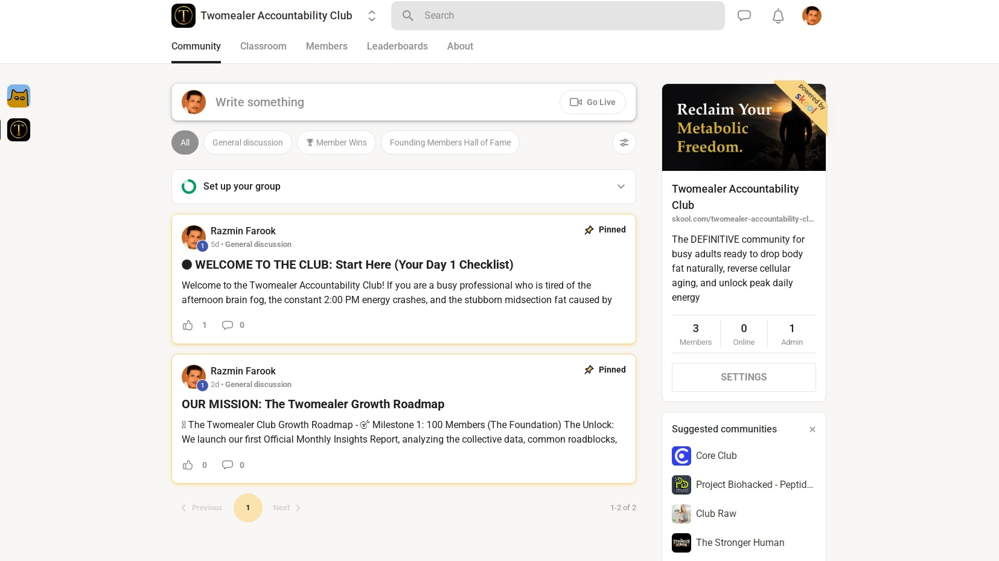
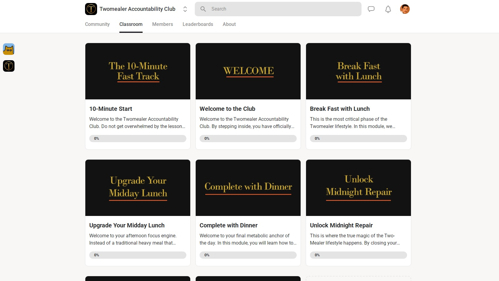

A SIMPLE FRAMEWORK FOR BUSY ADULTS
Build sustainable habits for healthy aging, natural weight management, and long-term energy—without calorie counting or complicated meal plans.
JOIN FREE TODAY • LIFETIME ACCESS • FUTURE MEMBERSHIP: $5/MONTH
THE PROBLEM
THE FRAMEWORK
The Four Metabolic Anchors
High-integrity clean protein to fuel your cognitive launch window.
Raw nuts, seeds, or fruit to bypass the afternoon slump.
A satisfying wholesome meal before your evening wind-down.
12 hours of restorative digestive rest.
BACKED BY SCIENCE
Reversing the Clock at a Cellular Level
While you sleep, your body initiates a natural cleanup process that helps recycle worn-out cellular waste.
A clear digestive system before bed supports overnight recovery and repair.
FOR WHO
ACCOUNTABILITY & SUPPORT
Every Twomealer membership includes access to a private accountability community where members can learn, share progress, ask questions, and build lasting habits together.


Learn together. Stay accountable. Build habits that last.
Become a MemberSIMPLE 4-STEP PROCESS
Join Twomealer, learn the framework, track your progress, and build sustainable habits through accountability and community support.
Join Twomealer and gain access to the classroom, community, and resources.
Work through the classroom modules and understand the Four Metabolic Anchors.
Use the printable tracker to build consistency and awareness over time.
Share your progress, ask questions, and learn from other members in the community.
FOUNDING MEMBER OFFER
The first 50 members can secure lifetime access completely free. After the first 50 members, membership will transition to a $5/month subscription for new members.
First 50 members only. Future membership: $5/month.